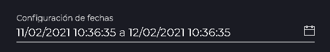
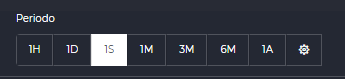
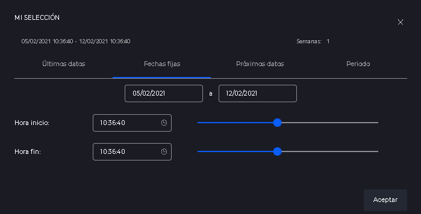
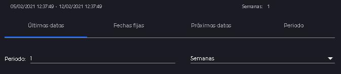
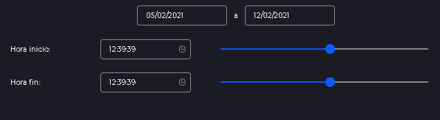
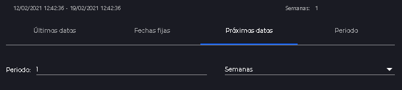
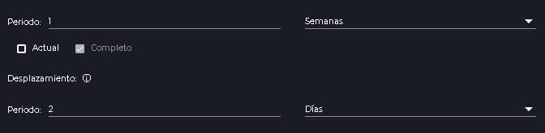
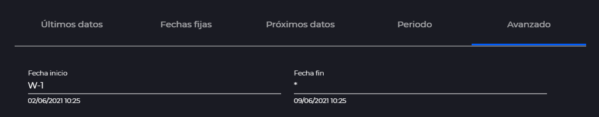

Selector de fechas
- 1 Introducción
- 2 Selector de fechas reducido
- 3 Selector de intervalos
- 4 Selector de fechas completo
- 4.1 Ultimos datos
- 4.2 Fechas fijas
- 4.3 Próximos datos
- 4.4 Periodo
- 4.4.1 Desplazamiento
- 4.5 Fechas avanzadas
1. Introducción
El selector de fechas es una herramienta basica del IDbox, que permite tanto seleccionar fechas estáticas como intervalos temporales dinámicos.
Hay 3 maneras de abrir el selector de fechas, repartidas por las diferentes secciones de la web.
2. Selector de fechas reducido
El selector de fechas mas habitual es el que tiene aspecto de campo de texto, podremos encontrarlo por ejemplo en el lanzador o en el panel derecho de configuración de series.

Como base tenemos un campo de texto con las fechas de inicio y fin escritas. Podremos escribir para cambiar cada una de las fechas, siempre manteniendo el formato mostrado por defecto. La fechas seleccionadas escribiendo se tendrán en cuenta como fechas fijas.
Si en cambio necesitamos una configuración mas compleja podremos pulsar sobre el calendario mostrado a la derecha del campo de texto y se abrirá una ventana modal con el selector de fechas completo.
3. Selector de intervalos
El selector de intervalos sirve para seleccionar rapidamente un periodo de fechas de “Ultimos datos”. Se compone de un grupo de botones que tendrá ciertos periodos predefinidos. Se podrán identificar por un número y la inicial del periodo que representan (Horas, Dias, Semanas, Meses o Años).

Si la configuración que buscamos no se cumpliese con las opciones mostradas se podría pulsar en el botón y se abriría una ventana modal con el selector de fechas completo.
4. Selector de fechas completo
En este componente se podrán configurar todas las configuraciones de fechas disponibles en IDbox.

En la parte superior podremos visualizar las fechas que resultarían del cálculo del intervalo seleccionado. A su derecha, tendremos una aproximación del intervalo seleccionado, por ejemplo, si seleccionamos un periodo de 1 semana y 4 días se mostrará 1 semana.
Debajo de esto podremos ver una serie de pestañas:
4.1 Últimos datos

Permite seleccionar un periodo de fechas compuesto de un número y una unidad. El periodo seleccionado se tendrá en cuenta desde el momento actual hacia atrás y se ira actualizando cada vez que se consulte.
4.2 Fechas fijas

Permite seleccionar un periodo de fechas formado por fecha y hora. Para las fechas se desplegará un calendario al hacer click en uno de los dos campos superiores. Si se hace click en el primer campo permitirá modificar la fecha inicio, después la de fin y después se cerrará el calendario. En cambio si hacemos click en el campo de la fecha solo preguntará por la fecha fin y se colapsará al seleccionarla.
Las fechas seleccionadas serán estáticas.
4.3 Próximos datos
Para que esta sección este disponible será necesario activarla en el fichero de configuración

Permite seleccionar un periodo de fechas compuesto de un número y una unidad. El periodo seleccionado se tendrá en cuenta desde el momento actual hacia delante y se ira actualizando cada vez que se consulte.
4.4 Periodo

Se basa en el funcionamiento del selector de ultimos datos pero con añadidos. Lo primero será un selector igual al usado en ultimos datos.
Despues de eso tendremos dos checks.
-
Actual: Indicará si el periodo que queremos ver esta en curso o no. Ej: Si hemos seleccionado una semana en la primera parte y seleccionamos “Actual” las fechas resultantes serán desde el primer momento de la semana hasta el momento actual. Sin embargo, con “Actual” desactivado las fechas serán desde el principio de la semana anterior hasta el final de la semana anterior.
-
Completo: El check “Completo” hace que se fuerce a la que fecha fin sea el final del periodo. En el caso de seleccionar la semana actual esta acabaría en el momento de ahora. Sin embargo, si seleccionamos “Completo” el periodo terminará en el final de la semana, implicando una fecha futura. Para que el resultado de este cálculo devuelva fechas futuras será necesario que este activado el parametro correspondiente en el fichero de configuración.
4.4.1 Desplazamiento
El desplazamiento sirve para mover el intervalo temporal hacia delante o hacia atrás en el tiempo, es como sumar fechas. Podremos seleccionar el valor y las unidades. Si el valor es negativo restaremos días y si es positivo sumaremos. Cuando se sumen fechas solo se calcularán fechas futuras cuando el parametro correspondiente en el fichero de configuración este activado.
Ej: Si queremos ver el periodo correspondiente a hace 2 días tendremos que seleccionar primero 1 día en el selector de periodo normal, y luego en el apartado de desplazamiento seleccionar -2 días.
4.5 Fechas avanzadas

Permite seleccionar una fecha de inicio y fin independientes, especificando para cada una de ellas una formula. Esta fórmula estará dividida en grupos de operadores, los cuales estarán separados por espacios.
Cada operador constará de una letra que representará un periodo de tiempo, un simbolo matemático (+, - o =) y un valor.
- D: Días
- W: Semanas
- M: Meses
- Y: Años
- h: Horas
- m: Minutos
- s: Segundos
Para cualquiera de estos operadores (X) se podrán realizar estas operaciones:
- D=1 Asigna el valor 1 al día actual
- M+2 Asigna al mes actual un +2, si estamos en junio mostrará agosto
- Y-1 Asigna al año actual un -1, si estamos 2021 mostrará 2020
Si algún periodo no se ve afectado por ningún operador este utilizará el valor de la fecha actual.